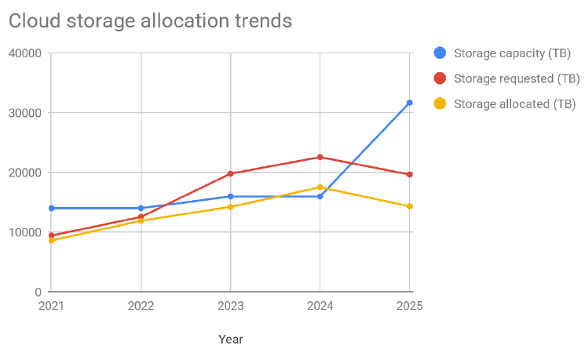
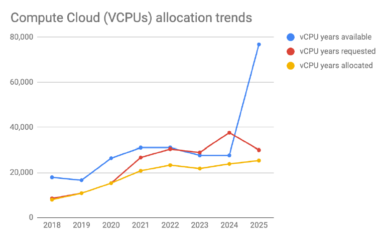

Redefining uptake
From Friction to Sovereignty in Canada’s DRI Ecosystem
The Paradigm Shift: Beyond Isolated Pillars

Data Curation: The Essential Connective Tissue
Connecting ARC, RSD, and RDM into a functional ecosystem.
The Reality of Demand: RAC 2025 Metrics



- Rising Demand: RAC 2025 shows a significant upward trend in resource requests.
- The Hidden Gap: While capacity is growing, much of it goes unused or misused due to gaps in RDM competence.
- Critical Uptake Metric: True adoption depends on researcher skills to manage petabytes of data, not just raw hardware availability.